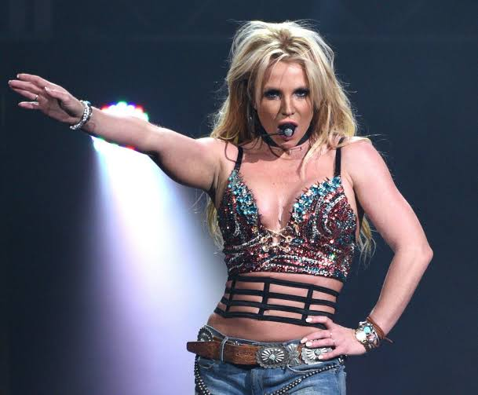

Britney Spears es una cantante, compositora, bailarina y actriz estadounidense reconocida como una de las artistas más influyentes de la música pop. Nació el 2 de diciembre de 1981 en McComb, Mississippi, y creció en Kentwood, Luisiana.
Su carrera dio un giro extraordinario en 1998 con el lanzamiento de ...Baby One More Time, un éxito mundial que marcó el inicio de una nueva generación del pop.

A lo largo de su carrera, Britney ha publicado numerosos álbumes de éxito como Britney, In the Zone, Blackout, Circus, Femme Fatale y Glory. Sus canciones, entre ellas Toxic, Womanizer, Stronger, Lucky, Circus y Gimme More, han encabezado listas de popularidad en numerosos países y continúan siendo escuchadas por millones de personas en todo el mundo. Más allá de su música, ha sido una gran influencia en la moda: sus presentaciones y videos musicales popularizaron estilos que marcaron tendencia durante décadas.
Durante su trayectoria también enfrentó importantes desafíos personales y profesionales. A pesar de ello, continuó demostrando su talento y resiliencia, regresando a los escenarios con exitosas giras y una residencia en Las Vegas que atrajo a miles de espectadores. Su historia ha inspirado conversaciones sobre la salud mental, la libertad personal y los derechos de los artistas, convirtiéndola en una figura relevante más allá del ámbito musical. Actualmente es considerada una de las artistas femeninas más exitosas de todos los tiempos, con más de 100 millones de discos vendidos en todo el mundo.